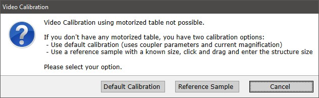
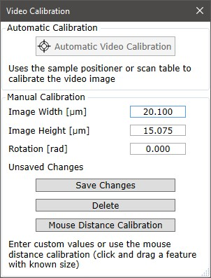

|
物镜视频校准
|
视频校准
为了图像拼接以及确保视频图像与探针采集的扫描图像之间具有正确的空间相关性，需要进行视频校准，可以通过不同方式完成。
如果有样品定位器或扫描台可用，视频校准将使用该台自动完成（优先使用样品定位器）。
如果没有可用的台子，可以进行手动校准。
上下文菜单
右键单击视频校准按钮并选择 使用默认校准 以使用默认校准。
请仅在特殊情况下使用此选项，即没有可用的扫描台或样品定位器时。
自动校准
如果有扫描台或样品定位器台可用，单击"开始校准"按钮或菜单项即可自动完成视频校准。
自动校准在以下条件下可能失败：
错误的图像内容：
错误的配置：
硬件错误：
手动校准
如果无法使用电动台进行视频校准，可以在默认校准和参考样品之间进行选择：

默认校准
使用当前物镜放大倍率、镜筒透镜焦距和视频芯片尺寸计算默认像素尺寸。
参考样品
可以在视频图像中拖动已知尺寸的特征并输入尺寸。
高级视频校准对话框
高级对话框位于主菜单 -> 高级子菜单中。
可以在此处输入自定义校准值：
